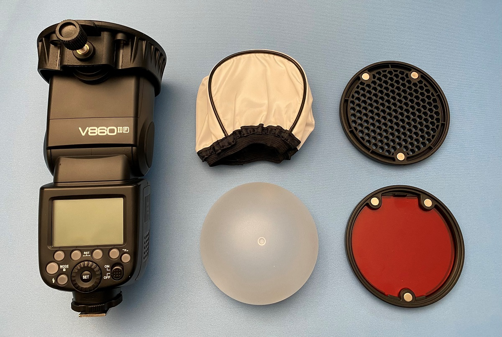

All test was done using a Godox V860II F mounted on a Fujifilm GFX 100s, and the subject is the Godox X1T-F wireless flash trigger.
ISO Set to 800. No flash shutter speed was 1/7 sec and all the different flash shutter speeds were 1/60 sec.
Info
This is just a test of different camera flash setups and the results. The accessories tested were as seen above from top left: Godox flash, diffusor, grid, dome and color filter (red).All test was done using a Godox V860II F mounted on a Fujifilm GFX 100s, and the subject is the Godox X1T-F wireless flash trigger.
ISO Set to 800. No flash shutter speed was 1/7 sec and all the different flash shutter speeds were 1/60 sec.
Flash test
{kind=link}
{kind=link}
{kind=link}
Direct dome
{kind=link}
Flash dome pointing towards subject. Softer light than bare direct flash, but harsher than indirect flash. Softer highlights as well than bare flash.
indirect dome
{kind=link}
Flash dome pointing towards white ceiling. Softest light. Softer highlights as well than the others, although very close to bare flash at white ceiling.
Direct grid
{kind=link}
Harsh, directed light. Strong contrast and shadows, although not as bright whites as direct flash.
Indirect grid
{kind=link}
Grid towards white ceiling. Unclear why anyone would do this, since thats probably not at all how anyone would use a grid flash accesory. Similar results as with bare flash towards ceiling, just a little harsher.
Diffusor
{kind=link}
Diffusor shower cap thingy with flash pointing up. Softer than bare flash. Harsher than direct flash, but also than indirect flash. Defined without being to contrasty.
Bonus 1: Direct red

Bare flash with red filter pointing towards subject. Just the same result as with direct flash, just a lot more red.
Bonus 2: Indirect red dome
{kind=link}
Domed flash with red filter pointing towards white ceiling. Just the same result as with indirect dome, just a lot more red.
Site info
Site is built with HTML, js and CSS only, published at GitHub Pages. No affiliates or sponsors. This is purely a hobby.